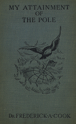
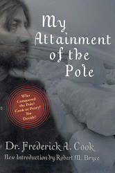
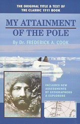

|
|
|
|
|
|
|
|
 Cover of the third edition. |
Like Peary’s book, The North Pole, Cook’s has a curious history, and like it, too, the amount the ascribed author actually wrote is in severe doubt. The two also share in common their origins in the articles that originally appeared under their names in Hampton’s Magazine.
Although Cook professed to be distraught over the tampering Hampton’s had done, he confirmed that little had been inserted. This must be true since a comparison shows that their content, with the exception of the last installment, which was never reused, is either identical to passages that are found in My Attainment of the Pole or is only slightly different, and what isn't identical matches the book in substance, if not in wording.
Dr. Cook proclaimed in his original introduction to My Attainment of the Pole, "I was relieved of much of the routine editorial work by Mr. T. Everett Harry. By his ceaseless study of the subject and his rearrangement of material, a book of better literary workmanship has been made." This was changed in subsequent editions to read, "by whose handling of certain purely adventure matter a book of better literary workmanship has been made." This change—one of the few made to the text among the three editions—is curious. Perhaps it was designed to obscure Harré's true contribution to the book's content by limiting his role in its creation to "purely adventure matter."
One reviewer of My Attainment of the Pole suspected that Harré's contribution explained a number of its peculiar features when compared with Cook's former writings. He objected to its turgid style and to the ignorance or misuse of the English language it contained, remarking that if Dr. Cook's claim that "a book of better literary workmanship has been made" was true, then "what its earlier embryonic condition must have been staggers the imagination, for even after all Mr. Harry's care the literary workmanship not unfrequently suggests the collaboration of a learned Babu." The reviewer rated the book as "at best what Tennyson called ‘confessions of a second-rate sensitive mind.’"
Along with these crudities and excesses, he noticed a number of errors not to be expected of an experienced arctic explorer or well-schooled physician: a "walrus" was described as if it were a narwhal and there were such physiological absurdities recorded as "the iris was reduced to a mere pinhole."
Rather than scientific proof of Cook’s attainment, he said, the book contained instead "an unfailing stream of that fervid enthusiasm, that gushing rhetoric, those iridescent descriptions, which have always furnished such convincing proof of the sterling purity of the doctor's soul," and concluded that "the efforts in this book, published long after the events, to make out a plausible case, have failed, and so egregiously as to inspire a doubt whether they are actually the work of the man who figures as the explorer and author."
By implication, Harré is the man responsible for the "wordy rubbish" to which Cook signed his name. Peary’s book had been written largely by the poetess Elsa Barker. Could Cook, like Peary, have entrusted the book on which his claim would hinge to a ghostwriter?
Harré characterized his part by saying he "undertook the editorial revision of all [of Cook's] material on his Polar exploit for book publication." And even a brief passage from any of Harré's subsequent books will convince anyone that Harré was capable of the sort of literary excess that dismayed our perceptive critic. Nevertheless, most of the main elements of My Attainment of the Pole originated with Dr. Cook. Many were outlined in practically the same terms in his extant polar notebooks now in the Library of Congress, including a list of many of the vivid color images that mark the book's descriptions.
At least a few passages in Through the First Antarctic Night, which was well received by its critics, show the same tendency to excess as My Attainment of the Pole. And there are a number of other points by which a common author of the two books can be recognized. Little of the substance, then, and certainly not all of My Attainment of the Pole's extravagance are the work of T. Everett Harré.
Dr. Cook knew that to be successful a story had to capture the imagination of its intended audience. "Apply as far as possible principles of experience in such a way that the common man grasps it," he advised. "A book must live by the emotional impress it delivers," he believed. "If it fails to blend with the reader's mentality and does not supply a ferment to produce a wine of action it is itself potentially dead. How can the printed page live is ever the author's study."
In Harré, Dr. Cook found an editor in tune with his ideas about writing, who had a knack for sometimes excessive but sometimes mesmerizing descriptions.
If there is some question as to just how much of the book's literary style, which has either enthralled or appalled its readers, is Cook's responsibility, there can be no doubt that the considerable portions of the book devoted to the Polar Controversy are his alone. Many have scoffed at My Attainment of the Pole for its color-drenched descriptions and its aggressive attacks on Robert E. Peary and the exploring establishment that ostracized Dr. Cook. But those who have proclaimed Cook's narrative an outrageous fraud while embracing Peary's confused The North Pole, with its far more implausible story, have missed the true intent of Cook's book.
Even though it professes to be "the final proof of Dr. Cook's polar attainment," My Attainment of the Pole was not in any way intended to convince the scientific community, which had already rejected his claims. The book was aimed squarely at supplying "a ferment to produce a wine of action" to intoxicate the minds of the masses and raise the possibility in those minds that Dr. Cook had actually reached the Pole, in spite of what the scientists thought.
As he said on its closing page, "My case rests, not with any body of armchair explorers or kitchen geographers, but with Arctic travelers who can see beyond the mist of selfish interests, and with my fellow-countrymen, who breathe normal air and view without bias the large open fields of honest human endeavor.
"In this book I have stated my case, presented my proofs. As to the relative merits of my claim, and Mr. Peary's, place the two records side by side. Compare them. I shall be satisfied with your decision."
Cook had no qualms about inviting this comparison. He knew that the narrative contained in Peary’s The North Pole was absurd but best left unquestioned, since the comparison he suggested made his seem all the more plausible. In an unguarded moment, however, he had already dismissed it by saying: "Can it be believed that Peary, with his negro associate, Henson, could have travelled north 135 miles over an unbroken trail and south 135 miles, making 270 miles in four [sic] days, less the time spent in observations? Why he could not have done it without an aeroplane." It was perhaps this knowledge—that Peary's story was no truer than his—that justified in Cook's mind his bitter attacks upon Peary, convinced him that Peary would never fight back, and assured him that he would be allowed to live comfortably as a lecturer denouncing the limitless conspiracy of "The Arctic Trust."
Cook once said of an Eskimo's central desire of life: "The real pivot upon which all his efforts are based is the desire to be rated well among his colleagues. . . . Is not this also the inspiration of all the world?" That desire was also Dr. Cook’s inspiration, that and every man’s desire not to be forgotten. Dr. Cook knew the truth about human immortality: that as long as just one living person remembers you, you are immortal, and as long as that one believes in your goodness, you are in heaven, not hell. And there are good reasons, based on the contents of My Attainment of the Pole, for belief in Frederick A. Cook and his ultimate salvation, if one only makes the right interpretations and has faith.
Lending additional strength to those who still believe today are those harsh charges leveled against Peary on the pages of Cook's book, which convinced many of its original readers that a moneyed conspiracy had robbed Cook of his honor, while blurring the fact that his own lack of proof was actually the cause of the rejection of his claims. Some of these charges, widely dismissed at the time of their writing, now have been shown to be true, and most of the rest have at least some plausible basis.
My Attainment of the Pole is then, a polemic—not for scientific vindication—but for popular belief, and a magnificent one, couching its true intent in the beguiling story at its core. Unfortunately, neither that beguiling story of Cook’s conquest of the North Pole in April 1908 nor the story of his survival of a "Stone Age Winter" following it, which he elaborated on in his posthumous Return from the Pole, are true.
My Attainment of the Pole comes in three distinct editions with some variations. The third edition, which is bound in blue-green cloth, is still quite common. The second, which is bound in red cloth, is far scarcer than the third, and the original, bound in brown with a picture of Cook and his two Eskimo companions on the cover under the imprint of the Polar Publishing Co, is larger in format and the scarcest of all. The first edition is rather cheaply bound and is rarely seen in fine condition. The other two have held up better. The third edition comes in two cover variations: one with a pictorial cover picturing an American eagle over the pole, and the other has just the title and the author, as with the second edition. It is believed that the version with the pictorial cover was used on the later printings.
There was some discussion within the Cook family after the unexpected success of Return from the Pole to reissue Dr. Cook’s most controversial work. The plan was to strip from the text all of Cook’s contentious rhetoric attacking Peary and just stick to the story of the expedition itself. For some reason this approach was rejected by the prospective publisher and never appeared (though something like this was published in Germany in 1928).
 |
However, after a dormancy of 88 years, two new editions of My Attainment of the Pole were issued in 2001. The first came from the imprint of Cooper Square Press. It is an absolutely complete and faithful facsimile of the 1913 edition, including all of the original pictures as they appeared there. The only addition is a new Introduction by Robert M. Bryce, largely adapted from his book, Cook and Peary, The Polar Controversy, Resolved. It does contain, however, some new material not used in that book bearing upon the way Cook’s book came to be as we know it today.
 |
The other, published by the Polar Publishing Co. (the publishing arm of the Frederick A. Cook Society) boasts on its cover that it is "the original text of the classic 1911 book" and its Foreword implies the same. It is no such thing.
It uses the text of the 1913 third edition, which Cook published to correct two fatal mathematical errors in the 1911 version of his "original field papers" containing observations that were supposed to be evidence that he reached the North Pole in 1908, but only proved instead that he knew practically nothing about using a sextant, even three years after he claimed to have found the Pole. The other changes he made, of lesser import, are also retained. But this publication isn’t even a reprint of the 1913 edition. It leaves out pp. 507-569 and 578-604. That’s 88 pages of the "original text" of even the edition it uses, contrary to what its cover says it contains. Why? In a sense, this is something like the sanitized version that Cook’s family sought to publish in the 1950s.
In the first group of missing pages, Dr. Cook says a lot of nasty things about Robert Peary ("the Sultan of the North"), The National Geographic Society ("prostituted its name"), and the "kitchen geographers," who refused to accept his bare word that he had done the deed, and tries to explain away all the evidence piled against his bare word as nothing less than a gigantic conspiracy. This sort of material is now apparently unpalatable to members of the society, who wish to project the image of their man as an accomplished and resourceful explorer who just didn't know what to do when confronted by the wiles of the world, and who, as a result, was crushed by the big power and money of the "establishment," especially, the dreaded Arctic Trust. Indeed, this was the story that Cook invented about himself.
In the second missing page set are the attempts of several of Cook's contemporary friends to speculatively justify his claim to the North Pole. All of their arguments have since been thoroughly debunked. Replacing this historical "original text" are some extended and equally unsupportable speculations by two latter day defenders of Cook's claim from the Cook Society.
But today, with Cook’s papers open to research, the tactic of leaving out the parts that don’t help your man, which has long been a trade mark of the Polar Controversy on both sides, no longer can work. Such tactics can do nothing to establish the Frederick A. Cook Society’s credibility as a seeker of "the Truth," when its own namesake’s papers and photos are so replete with examples of his dishonesty.
This version also entirely omits many of the original plates that appeared in the book, and removes them from the context of the narrative by placing the few it reproduces in a separate picture section. Oddly, however, it substitutes another version of Cook’s "Glacial Island" photo, which had originally appeared in a cropped version with a version showing the land at the right removed in the cropping: another departure from the Ur-text, which is not noted in any way.
| «- Published writings | Related writings -» |